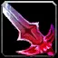
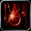
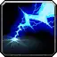
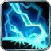
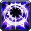
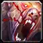

Launch talent changes
Every talent that changed between the October beta and launch, with the beta value under it, plus all racial changes since mid-October. Values follow Blizzard's development notes (updated Nov 2), which also confirm the Oct 30 hotfix changes first found in the game data by foreverchanges.pro. All of it is confirmed in the launch game data (build 1.60.1.70790, Nov 4).
Warrior · Paladin · Hunter · Rogue · Priest · Shaman · Mage · Warlock · Druid · Racials
Warrior
| Talent | Tree | Change |
|---|---|---|
| Arms | You keep up to 15 extra Rage (5 / 10 / 15) when you change stances. Now 3 ranks. Beta: You keep up to 15 extra Rage when you change stances. Renamed from Tactical Mastery. | |
| Arms | Up to 6% more damage (2 / 4 / 6%) with two-handed melee weapons. Beta: Up to 3% more damage with two-handed melee weapons. Now 3 ranks. | |
| Arms | Main-hand hits on targets with your Rend have up to a 20% chance (10 / 20%) to enable Overpower. Now 2 ranks. Beta: Main-hand hits on targets with your Rend have up to a 20% chance to enable Overpower. | |
| Arms | Slam's cast time and global cooldown are up to 0.5 sec shorter, it no longer interrupts or delays your melee swing, and its cooldown is up to 5 sec shorter (2.5 / 5 sec). Slam's base cooldown is now 15 sec. Beta: Slam's cast time and global cooldown are up to 0.5 sec shorter, it no longer interrupts or delays your melee swing, and its cooldown is up to 3 sec shorter. Moved from Fury; now 2 ranks. | |
| Arms | Hamstring has up to a 15% chance to root the target for 5 sec. Since the Oct 28 hotfix the root shares one diminishing-returns group with Entrapment, Counterattack, Improved Wing Clip and Frostbite. Beta: Hamstring has up to a 15% chance to root the target for 5 sec. | |
| Fury | Shouts cover up to 50% more area and cost up to 25% less Rage, and Piercing Howl costs up to 25% less Rage too. Beta: Shouts cover up to 50% more area and cost up to 25% less Rage. | |
| Fury | After you take a critical hit, or a single hit for over 20% of your max health, you regenerate up to 3% of your health over 6 sec. No longer causes threat and no longer triggers while sitting. Beta: After you take a critical hit, or a single hit for over 20% of your max health, you regenerate up to 3% of your health over 6 sec. | |
| Fury | When you are hit, a 30% chance to deal up to 10% more Physical damage for 12 sec. Moved up to row 3. Beta: When you are hit, a 30% chance to deal up to 10% more Physical damage for 12 sec. | |
| Fury | Costs 25% of your base health: your next 4 melee attacks within 8 sec generate 5 extra Rage each. 15 sec cooldown. Beta: Not in the beta tree – new in Blizzard's Nov 2 notes. | |
| Fury | After Enrage, Berserker Rage, Bloodrage, Death Wish or Bloodthirst, your next 3 melee attacks each restore up to 1% of your max health; the healing no longer causes threat. Moved up to row 5 and now follows Blood Craze instead of Enrage. Beta: After Enrage, Berserker Rage, Bloodrage, Death Wish or Bloodthirst, your next 3 melee attacks each restore up to 1% of your max health. | |
| Fury | After a melee crit your next 3 swings are up to 30% faster (10 / 20 / 30%). Now 3 ranks and no longer needs Death Wish. Beta: After a melee crit your next 3 swings are up to 25% faster. Now column 2. | |
| Fury | Whirlwind's cooldown is up to 2 sec shorter, and it deals up to 30% more damage (15 / 30%) to the closest enemy. Beta: Not in the beta tree – new in Blizzard's Nov 2 notes. | |
| Fury | Instant attack for 45% of your Attack Power plus 30, and 10% faster movement for 10 sec. 30 Rage, 6 sec cooldown. Now requires Death Wish. Beta: Instant attack for 45% of your Attack Power plus 30, and 10% faster movement for 10 sec. 30 Rage, 6 sec cooldown. No longer needs Death Wish. | |
| Protection | Up to 20% more threat (7 / 13 / 20%) in Defensive Stance with a shield equipped. Defensive Stance itself now adds 80% threat (was 30%). Beta: Up to 15% more threat in Defensive Stance with a shield equipped. Now 3 ranks. |
Paladin
| Talent | Tree | Change |
|---|---|---|
| Holy | Up to a 70% chance that taking damage doesn't slow your Flash of Light, Holy Light and Light's Vigil casts. Beta: Reduces how much taking damage delays your Holy spells. Up to 70% less at 5 ranks. | |
| Holy | Up to 30% of your mana regeneration continues while casting. Now 2 ranks. Beta: Lets up to 30% of your Spirit-based mana regeneration continue while casting (3 ranks officially). | |
| Holy | Your Seals and Judgements deal up to 15% more damage. Beta: Improves all Seals and Judgements, up to 15%. | |
| Holy | Consecration, Holy Wrath, Exorcism and Hammer of Wrath cost up to 40% less mana. Moved into Holy for launch. Beta: Moved from Retribution to Holy in the hotfix. Details pending. | |
| Holy | Up to 8% hit chance (4 / 8%) with Holy spells, and silences on you are up to 20% shorter. 2 ranks, no longer requires Holy Shock. Beta: Up to 18% hit chance with Holy spells (3 ranks, requires Holy Shock). | |
| Holy | Swear an Oath on one ally for 5 min: your Holy Light, Flash of Light and Holy Shock heal them for more. Amount pending. Beta: Not in the beta tree. | |
| Holy | Up to 30% more critical strike chance for Holy Shock on allies that don't have your Oath. Beta: Not in the beta tree. | |
| Holy | Holy spells' critical heals heal up to 50% more (10% per rank). No longer adds crit chance. Beta: Holy Shock and Holy Strike get up to 15% more critical strike chance; other spells up to 5%. | |
| Holy | Friendly targets only, 40 yd range. Vigil lasts 30 sec: your next Holy Shock on that ally skips the cooldown and heals them and their party. Beta: Grants Vigil to a target: your next Holy Shock on it skips the cooldown. On enemies it adds Holy damage and refunds 75% of its mana; on allies it heals their party. | |
| Protection | Up to 10% more Intellect. Moved from Holy to Protection. Beta: Increases your Intellect. Moved from Holy to Protection. | |
| Protection | Damaging melee hits against you have a 10% chance to raise your block chance by up to 30% (6% per rank) for 10 sec or 5 blocks. Beta: Increases your block chance, up to 20%. | |
| Protection | Divine Shield, Divine Protection and Templar's Bulwark cooldowns are up to 60 sec shorter, and Forbearance is up to 10 sec shorter. No longer gives Stamina. Beta: Increases Stamina. | |
| Protection | An absorb shield equal to 100% of your max health for 8 sec. Applies Forbearance for 1 min. | |
| Protection | Hammer of Justice's cooldown is up to 15 sec shorter. Beta: Reduces the cooldown of Hammer of Justice. | |
| Protection | Blocks absorb up to 30% more and always restore 4% mana, at most every 3 sec. Now 2 ranks. Beta: Blocks absorb more and can restore mana (3 ranks officially). | |
| Protection | Up to 10% more armor from items. Beta: Increases your armor. | |
| Protection | Unleashes your Seal's Judgement without using up the Seal, on its own cooldown. Beta: Requires Improved Seal of Fury in the beta. | |
| Protection | While Righteous Fury is active you take up to 9% less damage. Beta: While Righteous Fury is active you take up to 6% less damage. | |
| Protection | Up to +20 Defense skill. Beta: Increases your Defense. | |
| Protection | Stun and Charm effects on you are up to 20% shorter. Beta: Not in the beta tree. | |
| Protection | Increases block chance by 30% and deals Holy damage when you block. No longer requires Templar's Bulwark; new rank 1 at level 30. Beta: Increases block chance by 30% and deals Holy damage when you block. Requires Templar's Bulwark in the beta. | |
| Protection | Up to 30% more Holy Strike threat and 6% less damage taken. Now 3 ranks. Beta: Up to 25% more Holy Strike threat and 10% less damage taken (5 ranks). | |
| Protection | Holy Strike's cooldown is 4 sec shorter and it hits with your shield, triggering Holy Shield and Shield Specialization without using their charges. Also blocks spells for 6 sec. Beta: Not in the beta tree. | |
| Retribution | Up to +5% parry chance. Beta: Increases your parry chance. | |
| Retribution | Up to 6% critical strike chance (2 / 4 / 6%) with all spells and attacks. Now 3 ranks. Beta: Up to 5% critical strike chance with melee attacks (5 ranks). | |
| Retribution | Your Judgements have up to a 100% chance (33 / 66 / 100%) to return 20% of the judged Seal's mana cost, without threat. Beta: Your Judgements return mana, without generating threat. | |
| Retribution | Your attacks can lower the target's attack power for 30 sec (67 at rank 1). No longer raises yours. Beta: Your attacks lower the target's attack power and raise yours. | |
| Retribution | Fear and Disorient effects on you are up to 30% shorter. Beta: Increases your chance to resist Fear and Disorient effects. Moved from Holy. | |
| Retribution | Holy Strike deals 20% more damage. | |
| Retribution | Up to 6% more Holy and Physical damage, and up to 21% less threat while you wield a two-hander. Moved to row 4. Beta: Up to 6% more damage with two-handed weapons. | |
| Retribution | Turn Undead casts up to 1 sec faster with up to 10 sec less cooldown, and also works on Demons. Beta: Not in the beta tree. | |
| Retribution | Puts an enemy out of action for a short time. | |
| Retribution | Each non-periodic critical hit gives up to 3% more Physical and Holy damage (1% per rank) for 30 sec, stacking 5 times. Now requires Seal of Command. Beta: Critical hits boost your damage, stacking up to 3 times. Requires Sanctified Judgement in the beta. | |
| Retribution | Gain spell damage equal to up to 60% of your Intellect, and Hammer of Wrath casts up to 1 sec faster. Now 5 ranks. Beta: Gain spell damage equal to up to 60% of your Intellect (3 ranks). | |
| Retribution | Melee attacks store your active Seal for 15 sec, up to 3 times. Attacking with a different Seal spends the stored stacks. Beta: Not in the beta tree (replaces Twist of Light). |
Hunter
| Talent | Tree | Change |
|---|---|---|
| Improved Revive Pet | Beast Mastery | Same effect. Moved from column 4 to column 3 of row 2 in the Oct 30 hotfix. Beta: Revive Pet casts up to 6 sec faster, costs up to 40% less mana and brings the pet back with up to 30% more health. |
| Pathfinding | Beast Mastery | Same effect. Moved from row 2 to row 3 (column 1) in the Oct 30 hotfix, so it now needs 10 points in Beast Mastery. Beta: Aspect of the Cheetah and Aspect of the Pack give up to 6% more speed. |
| Trueshot Aura | Marksmanship | Party and raid members within 45 yd gain ranged attack power: 20 / 35 / 50 / 75 / 100 by spell rank (rank 1 comes with the talent). In row 4, no longer needs Barrage. Beta: Party and raid members within 45 yd gain +15 ranged attack power. Now in row 4 and no longer needs Barrage. |
| Barrage | Marksmanship | Multi-Shot, Aimed Shot and Volley deal up to 15% more damage (5 / 10 / 15%). Beta: Multi-Shot, Aimed Shot and Volley deal up to 10% more damage. |
| Sniper Shot | Marksmanship | 4 sec cast: ranged weapon damage plus a bonus that is twice as large as in the beta (about 320 at this rank), and your next 3 Shots within 10 sec get +10 yd range. 8–45 yd, 15 sec cooldown. Beta: 4 sec cast: ranged weapon damage plus 160, and your next 3 Shots within 10 sec get +10 yd range. 8–45 yd, 15 sec cooldown. |
| Survival | Up to 15% more Agility (3% per rank). Beta: Up to 10% more Agility. | |
| Survival | Mongoose Bite also makes the target bleed for 40% of its damage over 21 sec. A new bleed from you always replaces your earlier one. Beta: Mongoose Bite also makes the target bleed for 40% of its damage over 21 sec. |
Rogue
| Talent | Tree | Change |
|---|---|---|
| Improved Expose Armor | Assassination | Expose Armor costs up to 10 less Energy and, at 5 combo points, gives up to 2 combo points back. Moved up to row 2. Beta: Expose Armor costs up to 10 less Energy and, at 5 combo points, gives up to 2 combo points back. |
| Vigor | Assassination | Up to +10 maximum Energy. Moved up to row 3. Beta: Up to +10 maximum Energy. |
| Blood Splatter | Assassination | Rupture lasts 6 sec longer and Garrote lasts 9 sec longer. Beta: Not in the beta tree – new in Blizzard's Nov 2 notes. |
| Lethality | Assassination | Up to +20% critical damage bonus (10% per rank) on Sinister Strike, Gouge, Backstab, Mutilate, Ghostly Strike and Hemorrhage. Now 2 ranks. Beta: Up to +20% critical damage bonus on Sinister Strike, Gouge, Backstab, Mutilate, Ghostly Strike and Hemorrhage. |
| Assassination | Each combo point spent on a finishing move gives up to a 20% chance (4% per rank) to get 25 Energy back. Now 5 ranks, moved to row 5. Beta: Each combo point spent on a finishing move gives a 20% chance to get 25 Energy back. | |
| Venom | Assassination | Passive: Shank makes your poisons deal 30% more damage and apply 20% more often for 6 sec. No longer a finishing move and no longer needs Mutilate; moved up to row 5. Beta: Finishing move: poisons deal 30% more damage and apply 10% more often. Lasts 9–21 sec depending on combo points. 25 Energy. |
| Seal Fate | Assassination | Crits from combo-point abilities have up to a 100% chance (33 / 66 / 100%) to add an extra combo point. Now 3 ranks. Beta: Crits from combo-point abilities have up to a 100% chance to add an extra combo point. No longer needs Cold Blood. |
| Mutilate | Assassination | Dagger attack with both weapons: 90% weapon damage plus 40 per weapon (57 and 79 at spell ranks 2 and 3). 20% more damage to poisoned targets. 2 combo points. Now the 31-point talent in row 7. Beta: Dagger attack with both weapons: 75% weapon damage plus a flat bonus per weapon (17 in Blizzard's Rogue overview and the Oct 30 data; an older beta tooltip showed 13). 20% more damage to poisoned targets. 2 combo points. |
| Coup de Grace | Combat | Eviscerate deals up to 20% more damage (7 / 13 / 20%), and Death Mark deals up to 20% more and stores damage up to 20% faster. Renamed from Improved Eviscerate. Beta: Eviscerate deals up to 20% more damage. |
| Efficient Strikes | Combat | Sinister Strike and Hemorrhage cost up to 5 less Energy (3 / 5). Renamed from Improved Sinister Strike; now also covers Hemorrhage. Beta: Sinister Strike costs up to 5 less Energy. |
| Improved Sprint | Combat | Sprint has up to a 100% chance to remove movement-slowing effects. Moved up to row 2. Beta: Sprint has up to a 100% chance to remove movement-slowing effects. |
| Composure | Combat | Poised lowers the cost of your next Energy ability by up to 10 more (5 / 10). Poised is a new level-18 Rogue ability: out of combat at full Energy, your next Energy ability costs 10 less. Beta: Not in the beta tree – new in Blizzard's Nov 2 notes. |
| Flawless Execution | Combat | Eviscerate costs 15 less Energy (was 10). Beta: Eviscerate costs 10 less Energy. |
| Aggression | Combat | Sinister Strike and Eviscerate deal up to 15% more damage (5 / 10 / 15%); Backstab is no longer included. Moved up to row 4. Beta: Sinister Strike, Backstab and Eviscerate deal up to 6% more damage. |
| Weapon Expertise | Combat | Your attacks are up to 2% less likely to be dodged or parried. Moved up to row 4, so it no longer follows Blade Flurry. Beta: Your attacks are up to 2% less likely to be dodged or parried. |
| Dual Wield Specialization | Combat | Off-hand damage up to +50% (25 / 50%). Now 2 ranks, moved to row 5. Beta: Off-hand damage up to +25%. |
| Hack and Slash | Combat | By weapon type, up to: Axe/Sword 5% chance for an extra attack, Dagger/Fist +5% crit, Mace ignores 15% armor. Same effect; placed in column 4 here because Dual Wield Specialization moved into row 5. Beta: By weapon type, up to: Axe/Sword 5% chance for an extra attack, Dagger/Fist +5% crit, Mace ignores 15% armor. |
| Flash of Steel | Combat | Shank gives up to 15 extra Energy (3 per rank) and its cooldown is up to 2 sec shorter (0.4 sec per rank). Shank is a new level-24 Rogue ability: off-hand strike for 50% weapon damage that can't miss, 5 Energy, gives back 15 Energy, 10 sec cooldown. Beta: Not in the beta tree – new in Blizzard's Nov 2 notes. |
| Setup | Subtlety | Up to a 45% chance (15 / 30 / 45%) to gain a combo point when you dodge an attack or fully resist a spell. Moved up to row 1. Beta: Up to a 100% chance to gain a combo point when you dodge an attack or fully resist a spell. |
| Opportunity | Subtlety | Backstab, Garrote, Ambush and Mutilate deal up to 20% more damage (4% per rank). Now 5 ranks. Beta: Backstab, Garrote, Ambush and Mutilate deal up to 10% more damage. |
| Camouflage | Subtlety | Stealth slows you up to 15% less (5 / 10 / 15%) and its cooldown is up to 6 sec shorter. Now 3 ranks, moved to row 2. Beta: Stealth slows you up to 15% less and its cooldown is up to 6 sec shorter. |
| Dirty Deeds | Subtlety | Cheap Shot and Garrote cost up to 20 less Energy, and Garrote works from the front. Moved up to row 2. Beta: Cheap Shot and Garrote cost up to 20 less Energy, and Garrote works from the front. Moved to column 1. |
| Premeditation | Subtlety | Adds 2 combo points to a target from Stealth; use them within 20 sec. 2 min cooldown. Moved up to row 3. Beta: Adds 2 combo points to a target from Stealth; use them within 20 sec. 2 min cooldown. No longer needs Preparation. |
 Serrated Blades | Subtlety | Attacks ignore up to 9% of target armor and Rupture deals up to 30% more damage. Moved up to row 3. Beta: Attacks ignore up to 9% of target armor and Rupture deals up to 30% more damage. |
| Elusiveness | Subtlety | Vanish and Blind cooldowns up to 90 sec shorter. Moved down to row 4. Beta: Vanish and Blind cooldowns up to 90 sec shorter. |
| Ghostly Strike | Subtlety | 125% weapon damage and +15% dodge for 7 sec, and your next Ambush or Garrote within 7 sec can be used without Stealth. 1 combo point, 40 Energy, 20 sec cooldown. Moved to row 4. Blizzard says its extra damage with daggers was too high and is reduced. Beta: 125% weapon damage (180% with a main-hand dagger) and +15% dodge for 7 sec. 1 combo point, 40 Energy, 20 sec cooldown. |
| Quick Getaway | Subtlety | Sap can hold one more target, and after you Sap something you move up to 30% faster (15 / 30%) for 3 sec. Beta: Not in the beta tree – new in Blizzard's Nov 2 notes. |
| Heightened Senses | Subtlety | See stealth as if up to 3 levels higher, and up to 4% less likely to be hit by spells and ranged attacks. Moved down to row 5. Beta: See stealth as if up to 3 levels higher, and up to 4% less likely to be hit by spells and ranged attacks. |
 Hemorrhage | Subtlety | 100% weapon damage; the target takes 15% more Rupture and Garrote damage from you for 15 sec. 1 combo point, 35 Energy. Garrote is new; the extra damage with daggers was a bug and is fixed. Beta: 100% weapon damage (145% with a dagger); the target takes 15% more Rupture damage from you for 15 sec. 1 combo point, 35 Energy. |
| Boot Knife | Subtlety | Shank has up to a 100% chance (20% per rank) to add 2 combo points to the target. Beta: Not in the beta tree – new in Blizzard's Nov 2 notes. |
| Death Mark | Subtlety | Curse finisher for 25 Energy (20 yd, 10 sec cooldown): for 6 sec it stores 12% of the damage you deal per combo point (60% at 5; Garrote and Rupture store at double rate), then deals the stored damage, capped at about 590 + 20.6% of your Attack Power with 5 combo points. Beta: Not in the beta tree – new in Blizzard's Nov 2 notes. |
Priest
| Talent | Tree | Change |
|---|---|---|
| Renewed Hope | Discipline | Same, but Binding Heal is no longer listed (it is now a trained spell). Beta: Flash Heal, Lesser Heal, Heal, Greater Heal, Binding Heal and Penance get up to +10% crit chance on targets with Weakened Soul, and Weakened Soul is up to 5 sec shorter. |
| Holy Binding | Holy | New in the Oct 30 hotfix, replacing Binding Heal (now a trained spell, rank 1 at level 25). Each Flash Heal you cast on someone else heals you for 50% as much, with no threat. Beta: Not in the beta tree: this slot held the Binding Heal talent. |
| Shadow | For 30 sec your party is healed for 20% of your Shadow spell damage on the target; this healing can no longer crit. 30 sec cooldown. Beta: For 30 sec your party is healed for 20% of your Shadow spell damage on the target. 30 sec cooldown. | |
| Devouring Contagion | Shadow | Devouring Plague costs up to 50% less mana, and a target that dies with it spreads it to 2 enemies within 10 yd (critters no longer count). Beta: Devouring Plague costs up to 50% less mana, and a target that dies with it spreads it to 2 enemies within 10 yd. |
Shaman
| Talent | Tree | Change |
|---|---|---|
| Elemental | Shocks, Lightning Bolt and Chain Lightning cost up to 10% less mana. (Lava Burst is removed.) Beta: Shocks, Lightning Bolt, Chain Lightning and Lava Burst cost up to 10% less mana. | |
| Elemental Alacrity | Elemental | Lightning Bolt and Chain Lightning cast up to 0.5 sec faster. (Lava Burst is removed.) Beta: Lightning Bolt, Chain Lightning and Lava Burst cast up to 0.5 sec faster. Replaces Lightning Mastery and no longer needs Call of Thunder (removed). |
| Elemental | Fire totems, Flame Shock and Fire Nova deal up to 15% more damage, and Flame Shock lasts up to 9 sec longer. (Lava Burst is removed.) Beta: Fire totems, Flame Shock, Fire Nova and Lava Burst deal up to 15% more damage, and Flame Shock lasts up to 9 sec longer. Now column 4. | |
| Eye of the Storm | Elemental | Up to a 70% chance that taking damage doesn't delay Lightning Bolt or Chain Lightning. (Lava Burst is removed.) Beta: Up to a 70% chance that taking damage doesn't delay Lightning Bolt, Chain Lightning or Lava Burst. |
 Elemental Reach | Elemental | Lightning Bolt, Chain Lightning and Fire Nova get up to +6 yd range. No longer shortens the totem-moving spell (now called Totemic Call, 30 sec cooldown). Beta: Lightning Bolt, Chain Lightning, Fire Nova and Lava Burst get up to +6 yd range, and Totemic Projection's cooldown is up to 20 sec shorter. Replaces Storm Reach. |
| Call of Thunder | Elemental | Lightning Bolt and Chain Lightning get +5% critical strike chance. Replaces Lava Burst, which is removed. Beta: Beta: this slot was Lava Burst – 2.5 sec cast, about 113–145 Fire damage, 20% more if your Flame Shock is on the target. 135 mana, 30 yd, 10 sec cooldown. |
 Lightning Overload | Elemental | Lightning Bolt and Chain Lightning have up to a 30% chance (10 / 20 / 30%) to fire a second copy at the same target for half damage, free and with no threat. Beta: Lightning Bolt and Chain Lightning have up to a 10% chance to fire a second copy at the same target for half damage, free and with no threat. |
| Lightning Mastery | Elemental | For 15 sec: Lightning Bolt casts 0.5 sec faster and Chain Lightning has no cooldown. 3 min cooldown. Renamed from Elemental Mastery now that Lava Burst is gone; we assume it follows Call of Thunder, which took Lava Burst's slot. Beta: For 15 sec: Lightning Bolt and Lava Burst cast 0.5 sec faster and Chain Lightning has no cooldown. 3 min cooldown. Now requires Lava Burst. |
| Enhancement | Gain Attack Power equal to up to 150% of your Intellect (50 / 100 / 150%). Beta: Gain Attack Power equal to up to 100% of your Intellect. | |
| Enhancement | After a melee crit your next 3 swings are up to 30% faster (6% per rank). Beta: After a melee crit your next 3 swings are up to 25% faster. Now requires Mental Dexterity. | |
| Enhancement | Instant strike for 150% normalized weapon damage; your next Lightning Bolt, Chain Lightning or Earth Shock within 12 sec deals 20% more damage. 8% of base mana, 6 sec cooldown. Beta: Instant weapon strike; your next Lightning Bolt, Chain Lightning or Earth Shock within 12 sec deals 20% more damage. 8% of base mana, 8 sec cooldown. Moved up to row 4. | |
| Enhancement | Ghost Wolf casts up to 3 sec faster and works indoors. Moved down to row 4. Beta: Ghost Wolf casts up to 3 sec faster and works indoors. | |
| Maelstrom Weapon | Enhancement | Melee hits can grant a stack (up to 5, 30 sec) that cuts your next Lightning Bolt's cast time and mana cost, up to 20%. Now triggers twice as often (exact chance not published). Beta: Melee hits can grant a stack (up to 5, 30 sec) that cuts your next Lightning Bolt's cast time and mana cost, up to 20%. Proc chance not published. |
| Riptide | Restoration | Heals the target for 445 over 15 sec – the instant heal is gone – and Chain Heal on that target is 25% stronger. About 40% less mana, 12 sec cooldown. Beta: Instant heal for 485–533 plus 445 over 15 sec; Chain Heal on that target is 25% stronger. 245 mana, 40 yd, 6 sec cooldown. |
Mage
| Talent | Tree | Change |
|---|---|---|
| Arcane Resilience | Arcane | Gain Armor equal to up to 75% of your Intellect. Now 3 ranks (25% per rank). Beta: Gain Armor equal to up to 50% of your Intellect (2 ranks before the Oct 30 hotfix). Moved to row 1, column 3. |
| Arcane Concentration | Arcane | Damage spell hits have up to a 10% chance to make your next damage spell cost no mana (Clearcasting). Arcane Missiles can trigger it again, and Clearcasting isn't spent on Arcane Missiles while Missile Barrage is active. Beta: Damage spell hits have up to a 10% chance to make your next damage spell cost no mana (Clearcasting). |
| Missile Barrage | Arcane | Arcane Blast (up to 40%) and Arcane Wrath, Fireball, Frostbolt and Frostfire Bolt (up to 20%) can make your next Arcane Missiles free, with a 50% shorter channel and a missile every 0.5 sec. Now used up as soon as Arcane Missiles starts, and Clearcasting isn't spent on Arcane Missiles while it is active. Frost Blast is removed. Beta: Arcane Blast (up to 40%) and Arcane Wrath, Fireball, Frostbolt, Frost Blast and Frostfire Bolt (up to 20%) can make your next Arcane Missiles free, with a 50% shorter channel and a missile every 0.5 sec. Moved down to row 2. |
 Arcane Blast | Arcane | 1.5 sec cast: 34–38 Arcane damage. Each cast gives you 12% of your Intellect as spell damage and raises Arcane Blast's mana cost by 100%, stacking 4 times for 18 sec. 15% of base mana, 30 yd. Beta: 1.5 sec cast: 34–38 Arcane damage. Each cast gives you 15% of your Intellect as spell damage and raises Arcane Blast's mana cost by 175%, stacking 4 times for 15 sec. 15% of base mana, 30 yd. |
| Ignite | Fire | Fire spell critical strikes burn the target for up to an extra 40% of the damage over 4 sec. Now works with all Flamestrike damage. Beta: Fire spell critical strikes burn the target for up to an extra 40% of the damage over 4 sec. |
| Frostbite | Frost | Your Chill effects have up to a 15% chance to freeze the target for 5 sec. Since the Oct 28 hotfix the root shares one diminishing-returns group with Entrapment, Counterattack, Improved Wing Clip and Improved Hamstring. Beta: Your Chill effects have up to a 15% chance to freeze the target for 5 sec. |
| Ice Lance | Frost | Instant: 28–32 Frost damage, 300% more against Frozen targets. 45 mana, 30 yd, 8 sec cooldown, now on every rank. Beta: Instant: 28–32 Frost damage, 200% more against Frozen targets. 45 mana, 30 yd, 8 sec cooldown (only the talent rank had the cooldown). |
| Arctic Reach | Frost | Frostbolt, Frost Blast, Ice Lance and Blizzard get up to 20% more range, and Frost Nova and Cone of Cold up to 20% more radius. Now includes Ice Lance. Beta: Frostbolt, Frost Blast and Blizzard get up to 20% more range, and Frost Nova and Cone of Cold up to 20% more radius. |
| Winter's Chill | Frost | Same, but each stack now makes your next Cone of Cold deal 20% more instead of 5%. Beta: Frostbolt, Frost Blast and Fingers of Frost Ice Lances have up to a 100% chance to apply Winter's Chill: per stack (up to 5) the target takes 5% more damage from your next Cone of Cold and 7% of your spell damage more. |
| Ice Barrier | Frost | Same shield, but Frost damage is now +15% for 1 min and another +5% while the shield holds. Beta: Absorbs 447 damage (another source shows 493) and raises your Frost damage by 3% for 1 min, another 3% while the shield holds; damage doesn't delay your casts while shielded. 305 mana, 30 sec cooldown. Now requires Cold Snap. |
Warlock
| Talent | Tree | Change |
|---|---|---|
| Affliction | Now covers Drain Mana instead of Wrack: Drain Life, Drain Soul and Drain Mana deal or drain 7 / 13 / 20% more. Beta: Drain Life, Drain Soul and Wrack deal or drain more (7% at rank 1). | |
| Affliction | Your next Curse of Weakness or Bane of Agony is 50% stronger, or your next Curse of Exhaustion 20% stronger. Instant, 3 min cooldown. Now works correctly on Curse of Exhaustion and Bane of Agony. Beta: Your next Curse of Weakness or Bane of Agony is 50% stronger, or your next Curse of Exhaustion 20% stronger (cut from 50% in the Oct 16 hotfix). Instant, 3 min cooldown. | |
| Wrack | Affliction | Channel: about 86 Shadow damage every second at level 60 (was 36), with double the spell-power scaling; your other Shadow damage-over-time effects on the target deal 10% more for 6 sec. 200 mana, 30 yd. Improved Drains no longer boosts it. Beta: Channel: 36 Shadow damage every second, and your other Shadow damage-over-time effects on the target deal 10% more for 6 sec. 200 mana, 30 yd. |
| Destruction | Conflagrate gives up to +20% Shadow damage and Shadowburn up to +20% Fire damage (4% per rank) for 20 sec; Conflagrate has up to a 100% chance not to consume Immolate and Shadowburn up to a 100% chance to refund its Soul Shard. Beta: Conflagrate gives up to +10% Shadow damage and Shadowburn up to +10% Fire damage for 20 sec; Conflagrate has up to a 100% chance not to consume Immolate and Shadowburn up to a 100% chance to refund its Soul Shard. |
Druid
| Talent | Tree | Change |
|---|---|---|
| Genesis | Balance | Your periodic damage and healing are up to 10% stronger (2% per rank). Beta: Your periodic damage and healing are up to 5% stronger (1% per rank). |
| Moonkin Form | Balance | Same form, but the +3% crit aura now covers every type of critical strike. Beta: Moonkin shape: +360% armor from items, Omen of Clarity procs twice as often, and party/raid members within 45 yd get +3% crit chance (not every crit type). |
| Furor | Feral Combat | Same effect. Moved to Feral row 1, column 3 in the Oct 30 hotfix. Beta: Bear Form gives 10 Rage, and Cat Form brings back the Energy you had when you last left it (+10 per sec away from Bear, up to 100). Restoration row 1 in the beta notes. |
| Predatory Strikes | Feral Combat | Same effect. Moved to column 1 in the Oct 30 hotfix. Beta: In Cat, Bear and Dire Bear Form your melee attack power rises by up to 150% of your level. |
 Lacerate | Feral Combat | New in this slot in the Oct 30 hotfix: a bleed for 20 damage over 15 sec plus 10% weapon damage per application, stacking 5 times. Higher spell ranks at 34, 42, 50 and 58. Beta: Not a talent here in the beta notes (this slot held Primal Bite). |
| Predatory Discipline | Feral Combat | New in the Oct 30 hotfix: Ferocious Bite no longer spends extra Energy but still deals its extra damage. Tooltip not yet translated in game. Beta: Not in the beta tree. |
| Leader of the Pack | Feral Combat | Same aura, but the +3% now covers every type of critical strike. Beta: Party and raid members within 45 yd get +3% crit chance (not every crit type). |
| Rend and Tear | Feral Combat | You deal up to 15% more damage (3% per rank) to bleeding targets. Moved to column 1. Beta: You deal up to 10% more damage to bleeding targets. |
| Natural Reaction | Feral Combat | Same effect. Moved to column 4 in the Oct 30 hotfix. Beta: Up to +5% dodge, and each dodge gives 5 Rage (100% at max rank). |
| Primal Bite | Feral Combat | Moved to row 7 (level 40) in the Oct 30 hotfix, replacing Berserk: 100% weapon damage plus 42 (later ranks 62 / 77), 20 Rage, 6 sec cooldown. Now 3 spell ranks. Beta: Bear attack for 100% weapon damage plus a bonus, 20 Rage, 6 sec cooldown. A row 4 talent (level 25) with 4 spell ranks in the beta notes. |
| Shifting Power | Feral Combat | Moved to row 7 in the Oct 30 hotfix with an 8 sec cooldown (was 16). Improved Shifting Power was removed. Beta: Cat Form: turn 55% of your base mana into 40 Energy. 16 sec cooldown; a row 4 talent in the beta notes. |
| Heart of the Wild | Restoration | Same effect. Moved to Restoration row 1, column 3 in the Oct 30 hotfix, with no requirement. Beta: Up to 10% more Intellect, 20% more Stamina in Bear/Dire Bear Form and 10% more Strength in Cat Form. A Feral talent that needed Predatory Strikes in the beta notes. |
| Naturalist | Restoration | Healing Touch and Wild Growth cast up to 0.5 sec faster, and all your damage is up to 10% higher (2% per rank). Beta: Healing Touch casts up to 0.5 sec faster, and all your damage is up to 5% higher. |
| Reflection | Restoration | Same effect. Moved up to row 2 in the Oct 30 hotfix. Beta: Up to 50% of your mana regeneration continues while casting. Row 3 in the beta notes. |
| Subtlety | Restoration | Same effect. Moved down to row 3 in the Oct 30 hotfix. Beta: Your Nature and Arcane spells cause up to 30% less threat. Row 2 in the beta notes. |
| Bloom | Restoration | New in the Oct 30 hotfix, replacing Gift of the Earthmother: when your Rejuvenation or Regrowth ends, the target is healed for 100% of your Spirit (50% if dispelled). Tooltip not yet translated in game. Beta: Not in the beta tree (this slot held Gift of the Earthmother: 0.5 sec shorter global cooldown on Rejuvenation, Swiftmend and Wild Growth). |
| Swiftmend | Restoration | Consumes your own Rejuvenation or Regrowth on an ally to heal them for its full periodic amount – someone else's no longer counts. 20% of base mana, 40 yd, 15 sec cooldown. Beta: Consumes your Rejuvenation or Regrowth on an ally to heal them for its full periodic amount. 20% of base mana, 40 yd, 15 sec cooldown. No longer needs Tranquil Spirit. |
| Wild Growth | Restoration | Now a 3 sec cast (was instant), 2.5 sec with Naturalist. Heals the target and its party for 336 over 7 sec. 550 mana, 40 yd, 6 sec cooldown. Beta: Instant: heals the target and its party within 43.5 yd for 336 over 7 sec. 550 mana, 40 yd, 6 sec cooldown. |
Racial changes
- Nov 5
Launch game data (build 1.60.1.70790) checked: Undead Touch of the Grave now triggers as often as intended (it fired too rarely before), and talents that trigger from spells no longer have a lower chance at low spell ranks. All talent calculators match the launch data, including the reworked Rogue, Shaman and Warrior trees.
- Nov 4
Launch day. Blizzard's Nov 2 development notes confirm the racial values on this page (Human Ruthless 1%, The Human Spirit 10%, Orc Command and 2 min Blood Fury, Dwarf Artisan's Precision, Tauren Plainsrunning and Endurance, Troll 15 sec Berserking, Undead 15 sec Touch of the Grave, Skyborne 2% Wind Blessed). New: Cannibalize works again while you're immune to physical damage, and base stats are corrected for every race (a Tauren Warrior now starts with 5 more Strength than a Human Warrior) – Blizzard says that fix isn't in the game files yet. The notes don't give Skysight's or Attuned's durations, so both versions stay listed. All talent calculators now show the launch trees, including the big Rogue, Shaman and Warrior reworks.
- Nov 2
Talent calculators for all nine classes are live: Priest, Shaman, Warlock, Warrior, Mage and Druid join Paladin, Rogue and Hunter. No new racial changes since the Oct 30 hotfix.
- Nov 1
Rogue and Hunter talent calculators added. No new racial or class changes since the Oct 30 hotfix (checked Nov 1, 23:00 CET).
- Oct 30
Hotfix data: Skyborne Skysight lasts 30 sec and Charged / Attuned 15 min – Blizzard's Oct 26 post said 15 sec and 1 hour. We show both until it's settled.
- Oct 27
Orc Blood Fury cooldown 3 min → 2 min. Troll Berserking 10 sec → 15 sec. Undead Touch of the Grave internal cooldown 25 sec → 15 sec. Skyborne Charged and Attuned now persist through death but are removed on entering a raid.
- Oct 26
Human Ruthless 2% → 1% crit; The Human Spirit 5% → 10% Spirit. Dwarf Earth's Wrath removed, Artisan's Precision (+1% hit) added. Tauren Plainsrunning 2% per stack up to 60% (no longer on mounts); Endurance now 5% health only. Orc Savage removed, Command restored (+5% Hunter and Warlock pet damage). Skyborne Wind Blessed 3% → 2% haste.
- Oct 15
Weapon specializations replaced. Shatter Curse 15% → 5% with no immunity. War Stomp 90 sec. Troll Regeneration 20%. Touch of the Grave 20% / 30% proc chance.